建物をタップすると「水がどこまで来るか」と「何階より上へ逃げるか」を、
やさしい日本語・English・简体中文・한국어 で示す Web アプリ
平面の地図でわかるのは「この地点が何 m 浸かるか」まで。
「この建物の何階なら安全か」は、自分で考えるしかない。
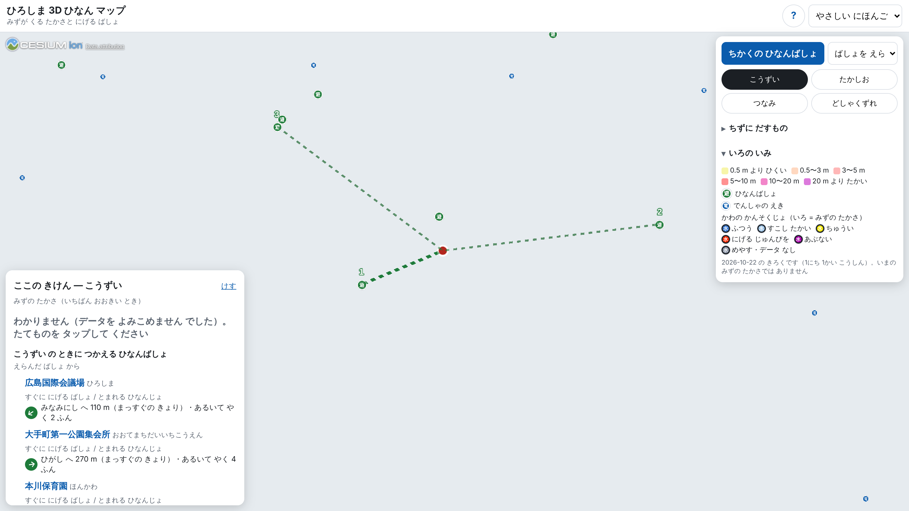
暫定画面（3D 建物なし）【本人】差し替え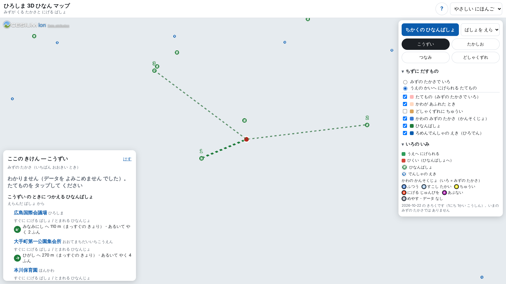
暫定画面【本人】差し替え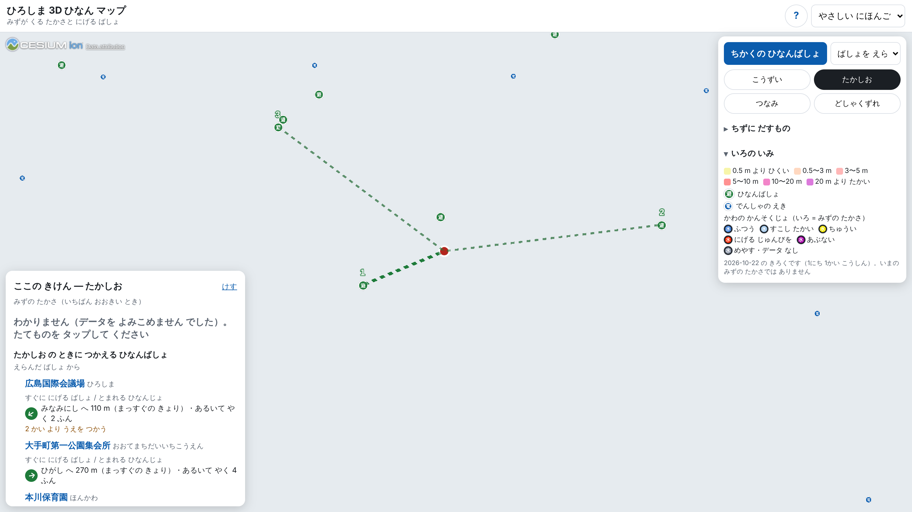
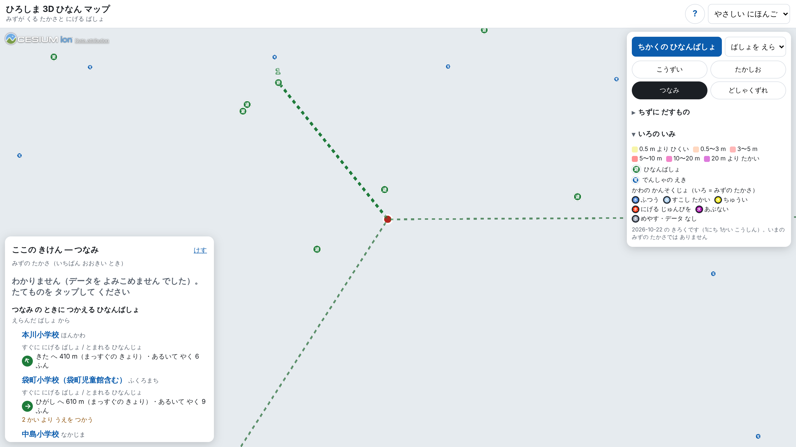
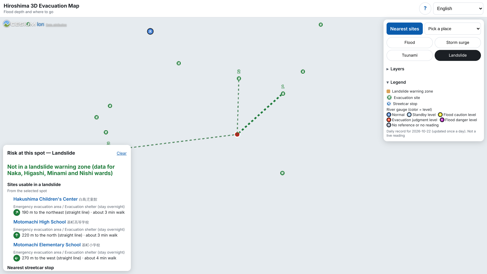
画面は暫定（浸水想定区域・建物・背景地図なし）。【本人】3D ありで撮り直して差し替え
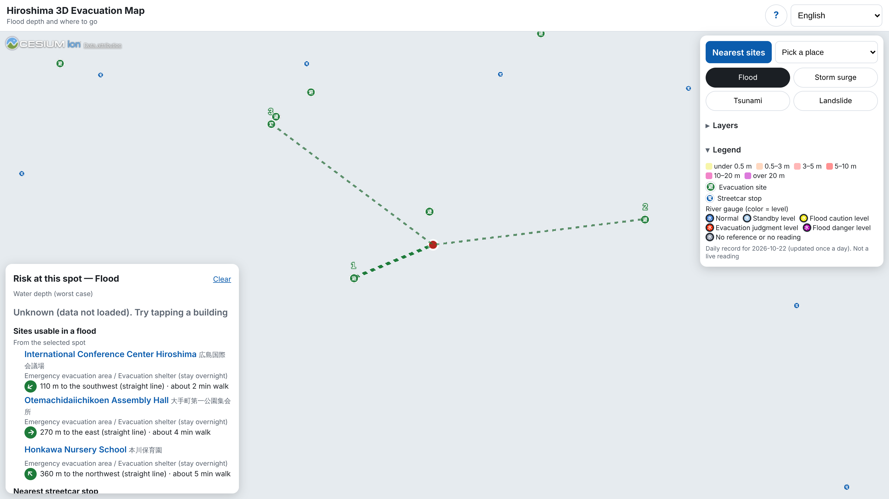
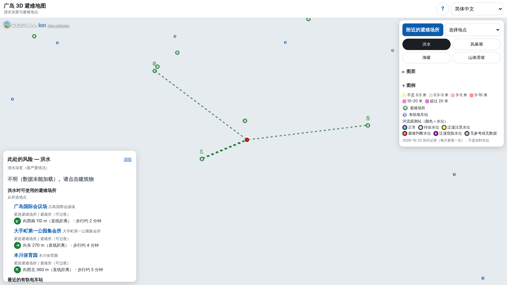
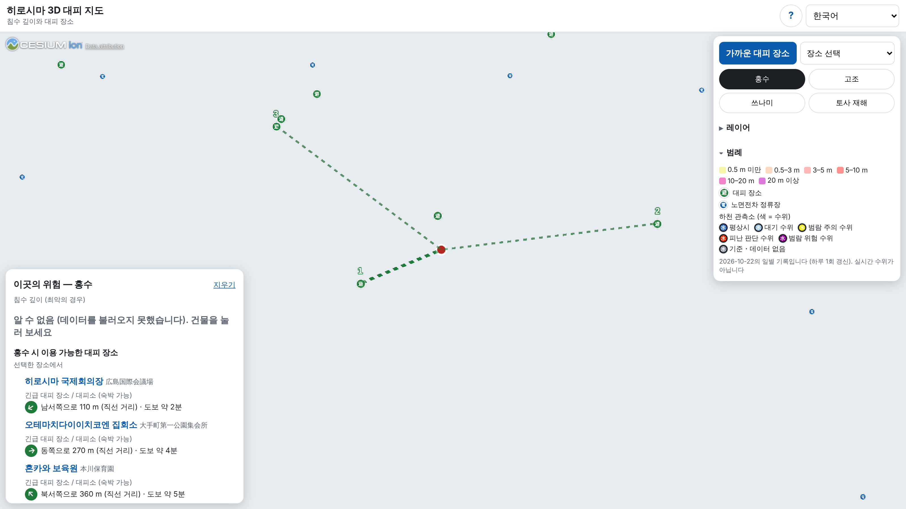
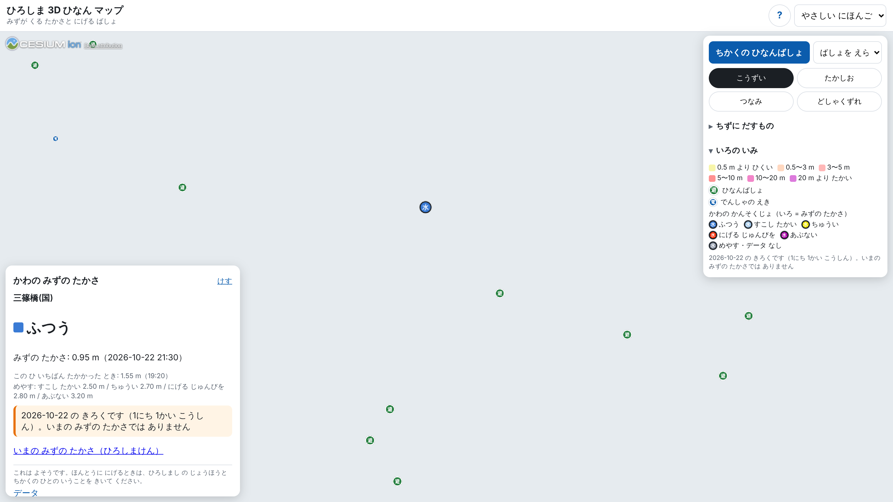
暫定画面（背景地図なし）画面の値は data/river.json（2026-10-22 の日集計）
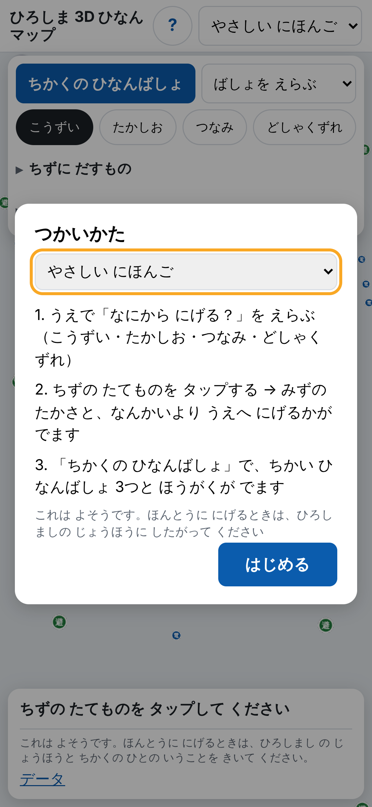
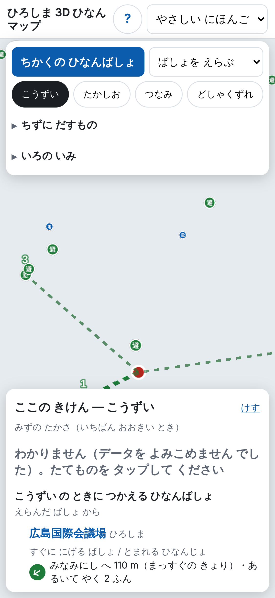
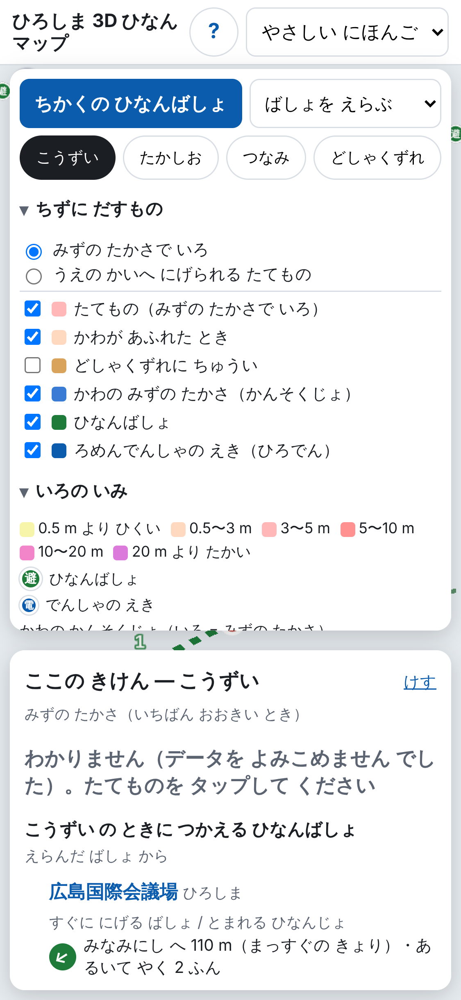
【本人】本人が決めた次の一歩（例: 訳語の監修の拡大、対象区の拡大）
| 審査基準 | スライド | この作品で示すこと |
|---|---|---|
| 3D 都市モデルの活用 | 3・4・5 | 建物の属性（浸水深・浸水継続時間・地上階数・計測高さ）で建物ごとに判定・着色。洪水 L2 ×6 河川・高潮・津波の浸水想定区域を重ねる |
| アイデア | 2・3・7 | 「この建物の何階より上へ」という建物単位の行動の案内。想定（PLATEAU）と観測（DoboX 河川水位）の重ね合わせ |
| UI/UX/デザイン | 4・6・8 | やさしい日本語を含む 4 言語、施設名を機械翻訳しない表記、手引き準拠の凡例色、初回案内、スマホ 375px |
| 技術力 | 9 | ビルドなしの CesiumJS で PLATEAU 配信を直接表示、ジオイド補正、CORS の無いデータの事前変換、国外から読めない DoboX の毎日取り込み、自動テスト |
| 実用性 | 5・7・8・10 | 災害に使える避難場所だけから最寄り 3 件（外部 API なし）、URL だけで使える、「わかりません」と限界の明示 |
https://class-now.github.io/hiroshima-evac-nav/
?spot=peace（平和記念公園）・station（広島駅）・hondori（本通）・castle（広島城）、?lang=ja-easy / en / zh / ko
公開 URL